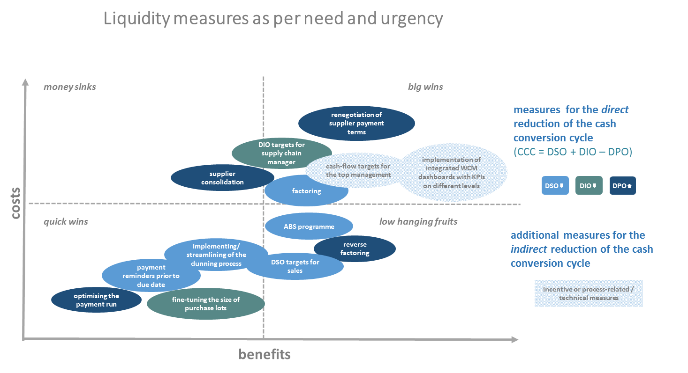

This article deals with short-term measures to optimize working capital and liquidity management. The strengthening of the supply chain, a currently important measure for many companies, is illustrated by an example from the retail sector.
The Covid-19 pandemic is a real stress test for our society as well as for companies and their treasury departments. The current loss of production and sales due to the collapse or absence of orders combined with a worsening consumer sentiment and investment climate is putting numerous companies under financial pressure. Often organizational circumstances and/or weaknesses exacerbate the situation.
While inflexible cost or capital structures can severely restrict financial room for manoeuvre in the crisis, a lack of system support and transparency can make it even more difficult to reliably determine the liquidity situation. In addition, due to the discontinuation of FX cash flows and thus significantly changed exposures, closed FX hedges from the pre-crisis era (as a whole or partly) might become obsolete and turn into risk positions themselves.
Despite all uncertainty, there are still some measures to better navigate companies through the crisis in the short- and medium-term. These will be outlined in the following sections.
Cash flow forecasting is a central component of financial management within any company. The main objective of the forecast is to support liquidity management in ensuring that payment obligations are met and financial gaps are always avoided.
For the identification, selection and extraction of all relevant information, a close cross-departmental and cross-level cooperation is indispensable. Data from various sources, such as account statements (data on the current liquidity position) or accounts receivable/payable (data on expected payment flows) needs to be prepared taking payment history into account and merged with planned payment flows.
The aim should be to produce daily short to medium-term liquidity forecasts, which should cover at least the next three months. The forecast should provide the opportunity to consider various stress scenarios regarding expected / planned incoming and outgoing payments to identify short to medium-term financing needs. Additionally, to obtain a complete picture, an overview of the existing credit facilities and their utilisation must be compiled and linked to the liquidity forecast. Having put together all this data, it can be determined for how long sufficient liquidity might be available given the various scenarios and existing liquidity parachutes.
The prerequisite for a quick and reliable liquidity forecast is an adequate system, into which the required data can be easily imported. In the absence of such a system, an external cloud-based service can fulfil the internal company requirements in the short run.
Working capital management, which has often been neglected in the still prevailing low-interest rate environment of the recent years, offers additional opportunities to generate liquidity. Basically, the shorter the investment period and the fewer capital is tied up, the more funds are available to balance liquidity bottlenecks. The focus of optimization is the reduction of the cash conversion cycle (CCC or cash turnover), which is calculated as days of sales outstanding (DSO, average collection period) plus days of inventory outstanding (DIO, average storage period) minus days of payables outstanding (DPO, average supplier payment target).
Firstly, it is important to define feasible short, medium and long-term options and to define clear objectives (KPIs). Secondly, it is necessary to involve experienced employees to take forward the defined measures at an interdepartmental level with the support of the management. Targets for specific KPIs should be clearly defined and be included in the target agreement of the responsible persons.
On the assets side, the development of receivables and overdue customer payments should be examined by volume and age structure to focus on the receipt of "promising" individual receivables and thereby on the reduction of the DSO. Using payment advices, the streamlining of the dunning process (while considering the individual business relationship) and factoring, the average collection period can be systematically and effectively reduced. Certain ERP systems offer special features for cash collection and the reduction of the DSO: according to defined criteria, so-called “operational queues” are generated which assist in the forwarding of payment reminders to the most important customers to reach agreements on promises of payment for the purpose of reducing the DSO. The aim is to contact the business partner before the due date, instead of trying to collect piles of dunning items afterwards. Likewise, stock and supply chain analysis as well as fine-tuning of the size of purchase lots can reduce the capital tied up and thus lower the DIO.
On the liabilities side, the renegotiation of supplier payment targets to adjust one's own payment behaviour as well as the use of reverse factoring raise additional liquidity potential and help increase the DPO.
Measures to improve working capital in one’s own company can have a negative impact on the commercial environment: suppliers often experience a worsening of their own working capital ratios (through an increase in the DSO) if their customers optimize their accounts payable via extended payment periods which can in turn lead to adverse effects on the optimizing customers in the future.
With the help of modern supply chain financing (SCF) platforms, this conflict of interest can be resolved. Based on the initial worsening of the payment terms for the supplier, which is usually associated with such a programme, the purchasing company can offer selected suppliers the opportunity to participate in an "early payment programme". This means that the suppliers can choose at transaction level for individual receivables whether they want to have settled their receivables early at a usually low discount rate or whether they stick to the longer, contractually agreed payment period. If the suppliers select the early payment, this can be funded by the customer company via a SPV (Special Purpose Vehicle) through investors who wish to invest in the counterparty risk of the purchasing company. In this way, the working capital of both companies is relieved. The claim of the supplier is settled earlier than contractually agreed, which may bring further financing advantages. The purchasing company pays the SPV on the original maturity date, so that neither its working capital nor balance sheet ratios decline. Alternatively, the purchasing company can invest its own liquidity in the early payment program - this however would affect its own working capital ratios.
The positive effect of such a SCF platform was confirmed by a trading company from the food retail sector, which had already been using a SCF platform for a year. From a legal point of view, each of these early payments represents an individual supplementary agreement, which is independent of the contractually agreed payment terms or those regulated in the general terms and conditions. Technically, selected "trade payables" of the purchasing company are regularly mirrored on the SCF platform and thus made transparent for the supplier.
In the current situation of the Corona pandemic, there are more and more requests from suppliers to shorten the payment terms. Those suppliers who already use such SCF platforms are happy to benefit from them and can react efficiently in the current situation. To others, the present situation proves how helpful such platforms as flexible vehicles are as providers of additional liquidity. Such SCF platforms offer special benefits when, on the supplier side, discussions with banks are becoming increasingly difficult, agreements take a long time and risk premiums suddenly rise sharply.
The response from suppliers who use such platforms is positive - especially in times of strained liquidity. The mostly intuitive handling of such a tool is often emphasized. Users also appreciate the flexibility and transparency. The reliability and predictability of their own liquidity planning on the supplier side is also rated positively - this however requires that the customer company does not change the framework and conditions too frequently.
In summary, it can be concluded that SCF platforms offer important contributions for the purchasing companies to support their suppliers and thus stabilize their own value chain.
If companies are unable to cover crisis-related liquidity shortages with their own resources, the resulting financial needs, depending on the scenario, must be met by other or new sources of funding. Traditional measures and instruments for liquidity management used in daily business may not be sufficient in times of crisis, which means that strategies for liquidity generation must be reconsidered. Furthermore, crisis measures such as short-time work or the use of government support programmes can be implemented to ease liquidity pressures.
The current crisis clearly illustrates how significantly the need for additional financial resources varies depending on the sector. While many parts of the food retail sector have seen a massive increase in sales volumes and thus have the outlook of sufficient liquidity, the business situation in many other sectors is deteriorating rapidly, so that additional cash is often urgently required.

Figure based on the practice guide Working Capital Management, p. 20.
Depending on need and urgency, financial needs can be covered by various liquidity sources and measures. External sources can thus complement internal liquidity and working capital measures and increase the financial leeway of companies.
To provide affected companies with additional liquidity, various institutions at both the European level and that of the Federal Republic of Germany provide different support programmes. As different as these support programmes might be, they all aim to ensure the solvency of small, medium and large enterprises as well as other vulnerable parts of the economic system.
In addition to programmes at the European level, such as the investment aid from the European Commission and the large-scale ECB pandemic emergency purchase programme, Germany has introduced accelerated loans without credit risk assessment and KfW loan programmes for companies of all sizes. In addition to this, the German Federal Government is supporting companies with an economic stabilisation fund, while additional aid is available at Federal State level in the form of special support programmes focusing on small companies.
Times of crisis tear finance managers out of their comfort zone and force them to take drastic measures in the short to medium-term to ensure the company's liquidity. The creation of transparency in liquidity management, WCM measures and the preparation of liquidity forecasts including possible stress scenarios must be seen as a "never-ending story" and must not be abandoned after times of crisis. The next crisis - of whatever kind – will be easier to manage if the appropriate measures and processes to deal with it have already been implemented.
Svatopluk Alexander, member of VDT Cash & Liquidity-group
Jan Osenegg, member of VDT Cash & Liquidity-group
Alexander Odenthal, member of the VDT working group WCM
Further VDT publications on Corona Covid-19 can be found on the VDT website https://vdtev.de and https://vdtev.de/informationsportal-corona
.png "The LEI: Unlocking the Benefits of a Secure Payments Ecosystem for Corporate Treasurers")
The EACT has been advocating for a digital identity for Corporates for many years now. We believe that, Corporates, like individuals, must have a single identity which help them to identify itself and identify third parties as well in this digital era.
Read.png "LkSG Relevant for Treasury on a Case-by-case Basis")
The Supply Chain Due Diligence Act (LkSG) creates the legal framework to improve the protection of the environment and human rights along German supply chains. GACT spoke to Dr. Julia Sitter (White & Case LLP) about the relevance and need for action by treasury departments.
Read.png "CMU, The Come-Back!")
The Capital Market Union, which was one of the main objectives of the Vander Leyen Commission, is back in the limelight, and is likely to become a priority for the next Commission next summer.
Read.png "What Will be the Corporate Treasurer's Priorities for 2024?")
General insights into the common priorities of corporate treasurers that will still be relevant in 2024.
Read.png "Counterparty Risk Assessment by Treasurers")
François Masquelier lists some comprehensive steps to best assess counterparty risks.
Read